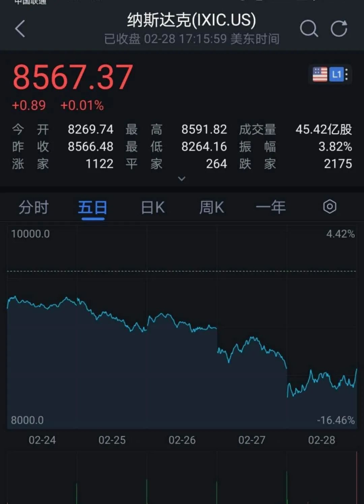
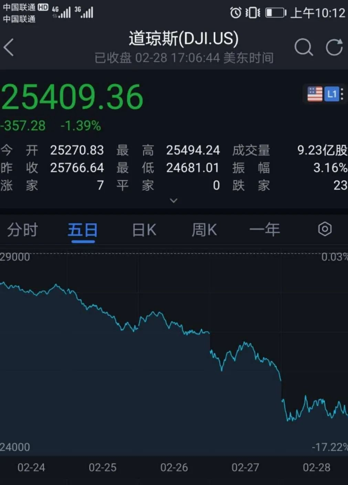

美股度过金融危机以来最黑暗一周，美联储表态
原文链接 备份链接 澎湃新闻记者 孙铭蔚 综合报道 当地时间2月28日，因担忧新冠肺炎疫情持续扩散，美股三大股指大幅低开，道琼斯工业指数一度再次跌掉超过1000点，但盘中美联储表态采取适当措施提振经济，以及微软引领大型科技股反弹，美股收复 …

美联储2月28日市场交易结束时进行了救援，发出强烈信号会尽快降息。这会使金融市场至少平静几天。市场随后反弹还是继续下滑，取决于美国及全球新冠肺炎疫情的走势

文 |《财经》特派记者 金焱 发自华盛顿
编辑 | 苏琦
世界卫生组织总干事谭德塞2月28日在日内瓦宣布，鉴于最近几天在中国境外受新型冠状病毒疫情影响的国家和病例数量持续增加，决定将新冠肺炎疫情级别由此前的“高”上调至“非常高”的水平。 这是世卫组织风险评估的最高级。
当疫情最初的影响主要控制在中国境内时，美国金融市场反应并不强烈。当中国疫情控制效果得以显现，韩国、日本、意大利、伊朗等国的确诊病例却开始大幅增长。这让美欧金融市场终于感受到疫情冲击风险，随即出现持续一周的断崖式全线下跌。
韩国疾病管理本部2月28日下午宣布，新增新冠病毒确诊病例571例，打破27日的505例，再创单日新高纪录。伊朗是海湾地区唯一报告有新冠病毒感染死亡的国家，也是中国以外死亡病例最多的国家。病毒扩散的恐慌情绪疫情严重干扰国际旅行和供应链，加剧了人们对美国和欧元区经济可能会走向衰退的担忧。
美东时间2月28日（周五），投资者担心疫情将打击全球经济，连续大跌之后，全球股市仍跌势不止。欧洲股市再度重挫，截至收盘，欧洲斯托克50指数跌3.62%，德国DAX指数跌3.86%、英国富时100指数跌3.18%，法国CAC40指数跌3.38%。美股集体低开，道指盘中跌逾1000点。截止收盘，美股三大股指涨跌不一，道指跌1.38%，纳指微涨0.01%，标普500指数跌0.83%。
2月24日至2月28日这一周，美股创2008年金融危机以来的最差一周表现，美三大股指均累计下跌超10%。欧洲斯托克50指数跌逾12%，伦敦股市《金融时报》100种股票平均价格指数跌超11%，法国巴黎股市CAC40指数累跌近12%，德国法兰克福股市DAX指数跌逾12%。
美股尾盘三大股指强势反弹，道指在2月28日从低点反弹逾700点，纳指收复超3%的跌幅。对于市场的表现，评级机构穆迪公司（Moody’s）旗下穆迪分析（Moody’s Analytics ）首席经济学家马克·赞迪（Mark Zandi）对《财经》记者指出，美联储在周五市场交易结束时进行了救援，并发出强烈信号会尽快降息。这会使金融市场平静至少几天。市场随后反弹还是继续下滑，这要取决于新冠肺炎疫情的走势。
金融市场如此关键时刻，美联储主席鲍威尔2月28日发表声明：“美国经济基本面强劲。同时，新冠肺炎疫情对经济活动造成的风险不断变化。美联储正密切关注事态进展及其对经济前景的影响。我们会利用货币政策工具、在必要的时机为经济提供支撑。”
谭德塞表示，几个国家出现了相互关联的疫情发展，但多数病例仍然可追踪到密切者，且并未发现病毒在社区自由传播的证据。他强调，控制疫情的关键是阻断病毒传播链条。如果采取强有力的行动尽早发现病例、对病人进行隔离和护理、追踪密切接触者，“我们仍有机会控制这种病毒”。
美联储能否救市？
美股2月28日大幅低开，早间道指一度狂泻逾1000点，延续了本周前期的暴跌趋势。本周美股创2008年金融危机以来的最差一周表现，标普500指数累计下跌11.5%，纳指下跌10.5%，道指下跌12.4%。2月份，标普500指数下跌8.4%，道指跌10%，纳指跌6.4%。



2月24日至28日这一周美股连续重挫，三大基准股指周四收盘时均已跌入回调区。标普500指数仅用6个交易日就回调，是史上用时最短的回调过程。所谓回调，其定义为从近期峰值下跌至少10%、但不超过20%。对于标普500指数和纳斯达克指数而言，二者均在周四录得2011年8月18日以来的最大日百分比跌幅，道琼斯指数则录得自2018年2月5日以来的最大百分比跌幅。
市场的恐慌情绪以及疫情导致需求下降的利空不只反映在价格上，也反映在恐慌性抛售上。多伦多交易所母公司TMX集团周五在社交媒体上宣布，受到订单系统故障的影响，多伦多交易所、多伦多创业板市场以及Alpha交易系统已经停止交易。受多伦多证交所停市影响，加拿大唯一的金融衍生品与期货交易所——蒙特利尔证交所也在同一日宣布停市。
多伦多证券交易所所有者TMX集团(TMX Group)解释称，由于“技术问题”，该交易所已暂停交易。有市场分析人士则认为，可能由于对冠状病毒的担忧，从而引发了恐慌性抛盘，据悉，在暂停交易前，多伦多证券交易所的交易量已经超过了30天的平均水平。FactSet的数据显示，本周四有超过2.32亿股股票易手，超过30天均值的2.311亿股。
国际货币基金组织前首席经济学家、哈佛大学经济及公共政策教授肯尼思·罗戈夫在接受采访时表示，全球陷入严重衰退的可能性高于金融危机以来的任何时候。
随着投资者的担心不断放大，美联储救市的呼声也越来越高。美联储官员近期的声明暗示他们还不相信有必要采取行动，不过，芝加哥商业交易所集团的数据显示，美国时间周四中午，交易员用来押注美联储政策走向的联邦基金利率期货显示，投资者认为美联储在3月17日至18日议息会议上将关键政策利率下调0.25个百分点的几率为72%。而一周前该几率仅为9%。 加之利率和通胀已处于低位，人们相信美联储可能需要采取积极措施削减借贷成本，以缓解这种新型冠状病毒的迅速蔓延对经济的冲击。
最大的敌人是恐惧、谣言和污名化
截至目前已有至少48个国家和地区报告了感染病例。联合国秘书长古特雷斯28日在纽约总部向新闻界发表谈话时评论说，这不是惊慌的时刻，而是进行准备——充分准备——的时刻。现在是所有国家政府加紧努力并尽一切可能遏制疫情的时候了，并且应当是在没有侮辱和尊重人权的情况下做到这一点。
古特雷斯说：”我们知道可以遏制疫情，但是机会之窗正在缩小。因此，我呼吁所有国家都承担起责任，展示团结和全面的全球支持。在这样做的同时，所有国家都应有信心，他们将得到联合国和世界卫生组织的支持。“
以意大利和伊朗为中心，欧洲和中东疫情持续升级。
当地时间2月28日傍晚，意大利民防部门负责人博雷利在例行疫情通报中表示，截至当天17时（北京时间2月29日0时），意大利共计确诊新型冠状病毒肺炎病例888例，较前一天增加238例。其中21人死亡，46人康复。博雷利指出，在现有确诊病例中，412人属于无症状或轻症状患者，64人接受重症监护治疗。另外，新增的4名死亡病例年龄都超过75岁。至此，意大利共有13个大区和1个自治省出现新冠肺炎疫情。
伊朗是海湾地区唯一报告有新冠病毒感染死亡的国家，也是中国以外死亡病例最多的国家。目前该国确诊病例超过300例，感染者中也包括伊朗副总统和卫生部副部长。在其他海湾国家里，科威特、巴林、阿联酋和阿曼都有感染病例。由于疫情蔓延，德黑兰已经取消了23省的首府在周五的祈祷活动，包括德黑兰和什叶派圣城库姆和马什哈德。
曾在非典期间主持美方相关人士与中国疾病预防控制中心跨洋电话会议的、前德州大学达拉斯分校副校长冯达旋对《财经》记者说，病毒是最民主的，它对所有人都一视同仁。日本和中国2月28日周五决定在应对新冠病毒疫情方面展开双边合作。
为防止新冠病毒入侵，美国海军2月28日颁布新措施，命令所有在太平洋海域港口停靠过的军舰都必须在海上自我隔离14天。美国海军发言人詹姆斯·亚当斯（James Adams）中尉说：“出于谨慎起见，太平洋舰队正在执行一项新的防范措施，避免船员感染新冠病毒，并对前往高风险地区的船员进行监控。目前没有迹象显示有美国海军人员受到病毒感染。

▲点击图片查看更多疫情报道
责编 | 黄端 duanhuang@caijing.com.cn
本文为《财经》杂志原创文章，未经授权不得转载或建立镜像。如需转载，请在文末留言申请并获取授权。
原文链接 备份链接 澎湃新闻记者 孙铭蔚 综合报道 当地时间2月28日，因担忧新冠肺炎疫情持续扩散，美股三大股指大幅低开，道琼斯工业指数一度再次跌掉超过1000点，但盘中美联储表态采取适当措施提振经济，以及微软引领大型科技股反弹，美股收复 …
原文链接 备份链接 【财新网】（记者 丁捷 综合）疫情爆发两月至今，随着重症、危重症病例和病死率下降，武汉疫情快速上升的趋势得到遏制，湖北省除武汉以外的其他地市，局部暴发态势得到遏制，全国疫情持续向好。国家卫生健康委2月28日强调，湖北省 …
原文链接 备份链接 目前包括中国大陆在内，全球已经有41个国家和地区出现了疫情，其中，韩国是中国大陆之外疫情蔓延最快的国家。 尽管如此，世卫组织不希望在“没有谨慎和清晰地分析事实情况之前”仓促宣布疫情为全球“大流行病” 文 |《财经》特派 …
原文链接 备份链接 目前，伊朗是中东地区确诊病例最多的国家。截至27日，伊朗共确诊245例新冠病毒感染病例，其中26例死亡，25例治愈出院。 全文3274字，阅读约需6.5分钟 截至27日，全球除南极洲外的六大洲都出现了新冠病毒感染病 …
原文链接 备份链接 韩国1月20日发现首例确诊病例，此后一个月疫情发展缓慢，到2月18日确诊31例。2月19日后突然暴增，一周新增超过1200例。 18日确诊的第31号患者，被视为“超级传播者”。 韩国新冠疫情的一大特征是，在特定群 …